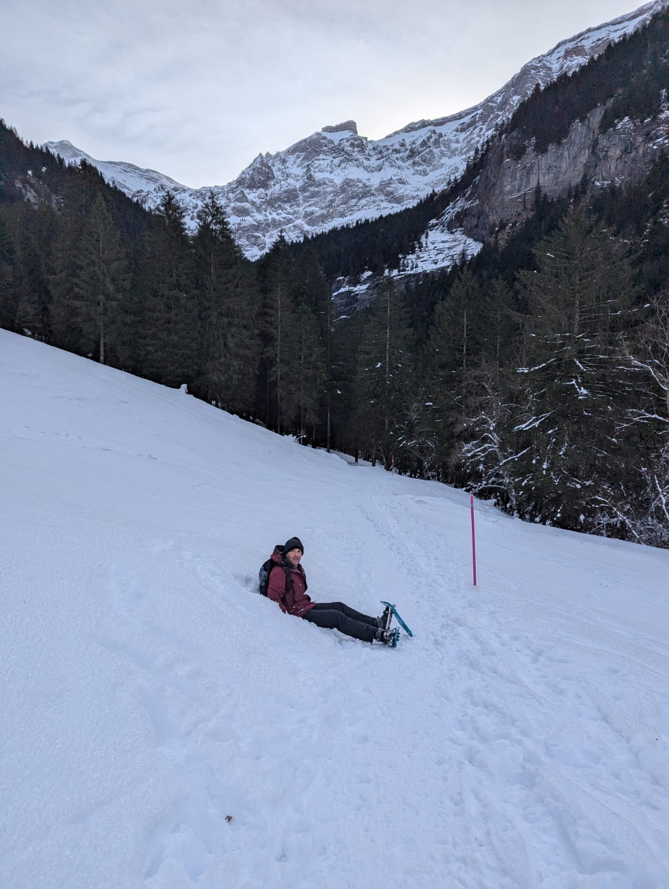

I am currently a head security Architect at Silence Labs. Previously I had built with ZenGo, Anoma and Inpher (exited). Despite roles I identify myself as engineer, curious in systems with an incline in applied cryptography systems and how things work.
I defended my PhD at Telecom Paris Tech/Eurecom in 2015. My advisor was Refik Molva. My research was based on secure private aggregation. Wearing my research hat I've (co-)authored scientific papers